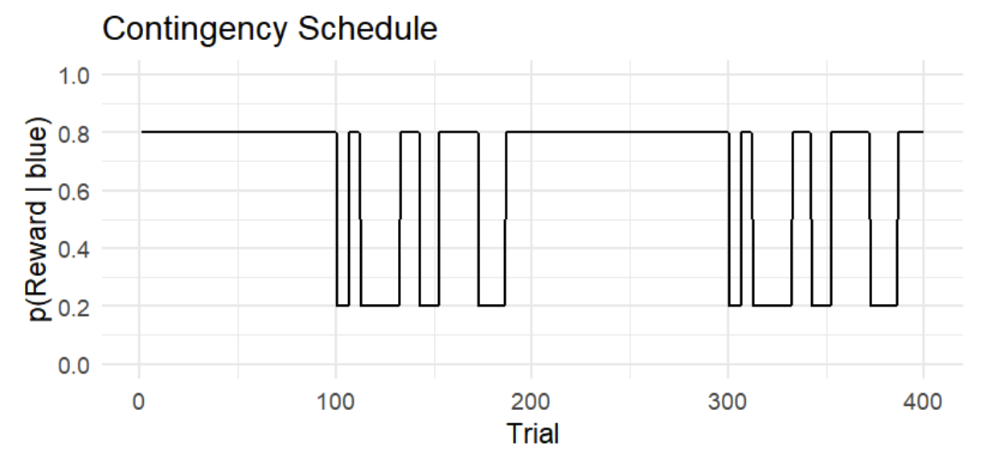
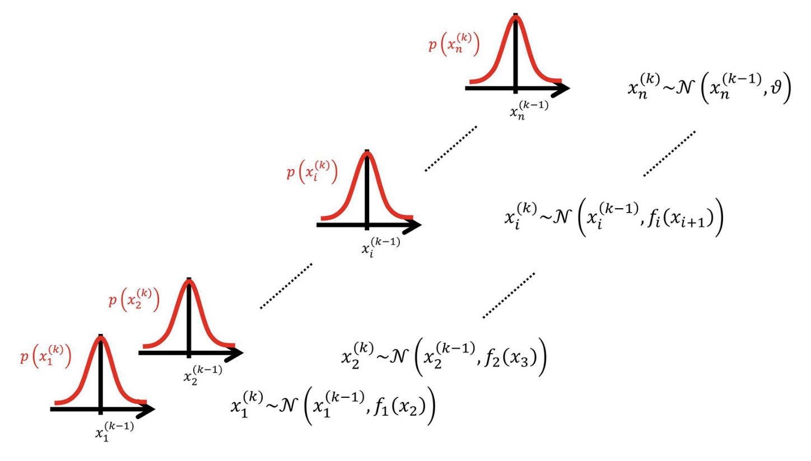
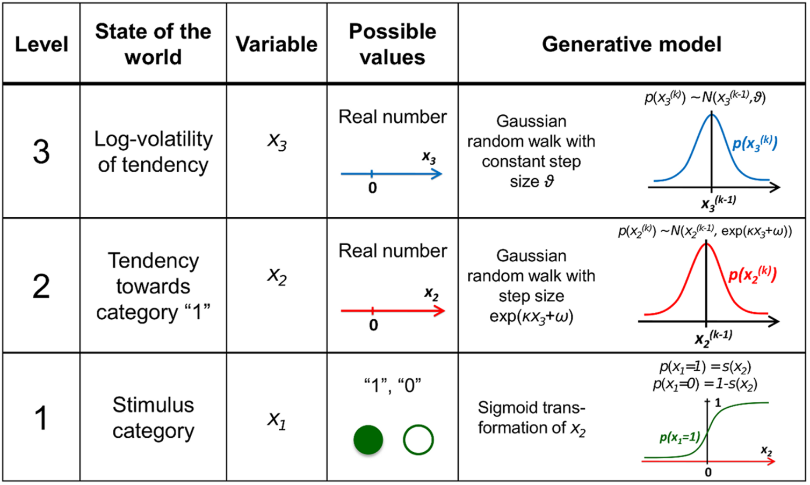
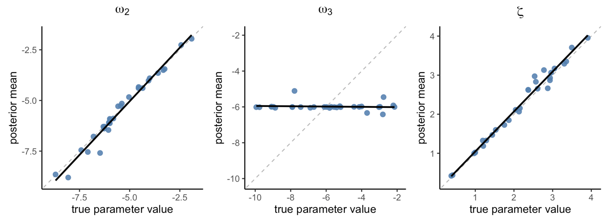
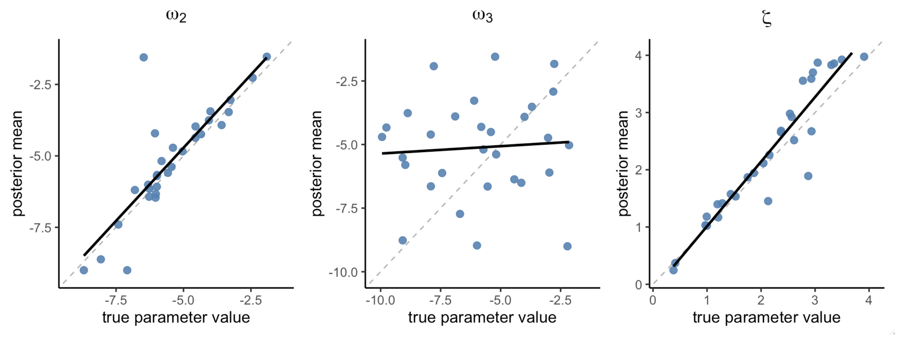
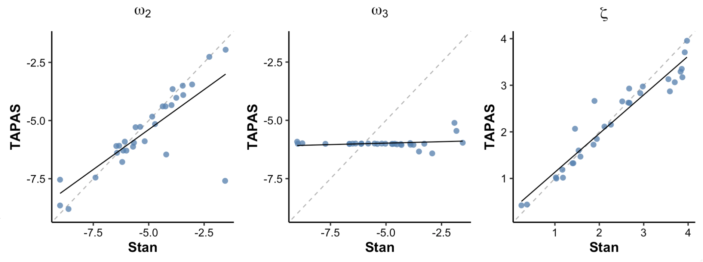
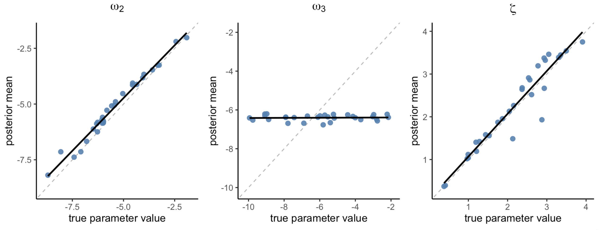
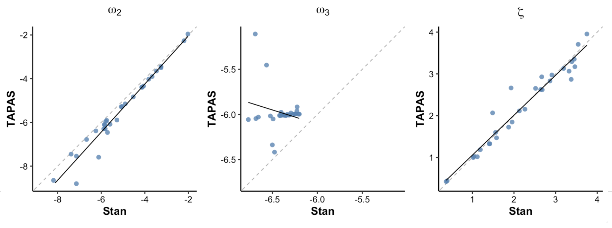
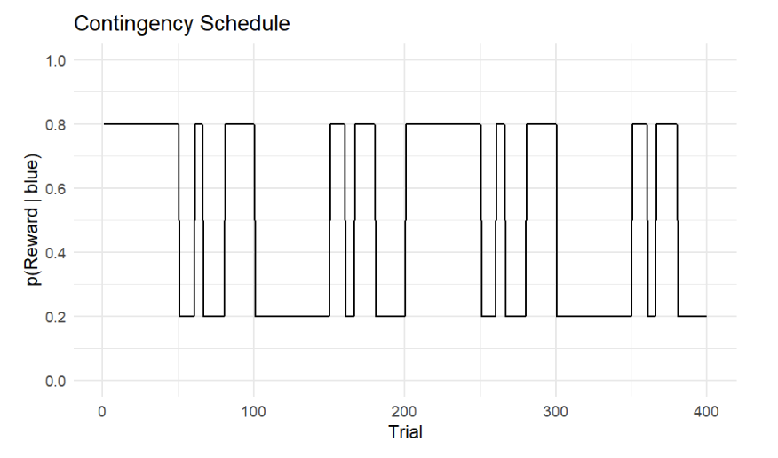

vignettes/hgf_tutorial.Rmd
hgf_tutorial.RmdBy Jinwoo Jeong, Juha Lee, Yusom Jo, Woo-Young Ahn | September 2, 2025
Hierarchical Gaussian Filter (HGF) is a cognitive model designed to explain how individuals learn in uncertain and changing environments (Mathys et al., 2011). Originally, TAPAS was the only available tool for applying HGF to behavioral data. By offering various combinations of perceptual and observation models, TAPAS HGF Toolbox enabled computationally efficient way to apply different HGF models.
Over the years, many researchers have requested adding HGF to
hBayesDM. To address such request, hBayesDM 1.3.0
introduces two functions: hgf_ibrb and hgf_ibrb_single.
Although these functions are currently limited to behavioral data with
binary inputs and binary responses, they provide a straightforward way
to apply MCMC and hierarchical Bayesian analysis to HGF models, which
are features not supported in TAPAS.
Let us consider a simple probabilistic reversal learning task where HGF can be applied.
On each trial, participants are presented with two colored options—blue(1) and orange(0)—and must choose one. On any given trial, one of the two options is the correct choice, and participants receive a reward if they select it. Across the experiment, the probability that blue is the correct option changes over time. The participant’s overall objective is to maximize the cumulative reward.

Figure 1. The vertical axis shows the actual reward probability of the blue option p(reward|blue), while the horizontal axis shows the trial number. Since the orange option is simply the alternative, p(reward|orange) is always one minus the value for blue.
The figure above illustrates a contingency schedule for a restless two-armed bandit task. The schedule spans 400 trials, alternating between stable and volatile phases.
Probabilistic learning tasks like this are well suited for HGF analysis because the environment changes over time, requiring participants to continuously track shifting reward contingencies.
One way to approach probablistic learning task is to assume a “true” hidden quantity for each trial, such as the actual probability of receiving a reward from the chosen option. This hidden state changes over time according to the contingency schedule, but the agent cannot observe it directly. Instead, the agent only observes inputs (whether the chosen option led to a reward) and tries to update its beliefs about the hidden state across trials. In this sense, the task represents a learning problem under uncertainty: how an agent can keep track of a changing, probabilistic world using only noisy feedback.
Note that there can be various sources of uncertainty: stochasticity (the reward is probabilistic at each trial), volatility (the reward contingency changes over time), and even volatility of volatility (the degree of environmental change itself may vary over time). Successful task performance therefore depends on the optimal processing of these sources of uncertainty in learning, and the pattern of such processing can be characterized by the values of the parameters in HGF.
For specific details on HGF, check the original papers (Mathys et al., 2011, 2014).
As the name suggests, the Hierarchical Gaussian Filter consists of multiple levels of hidden states, each organized in a hierarchy and evolving in Gaussian random walks. Theoretically, the number of hierarchy levels has no upper bound, but in practice it is not set too high due to diminishing explanatory gains and limited interpretability as a cognitive model.

Figure 2. Overview of the Hierarchical Gaussian Filter (Mathys et al. 2014)
For instance, let’s assume a 3-level HGF with binary inputs and binary responses. A HGF model with 3 levels has three hidden states for each level: x₁, x₂, x₃. And each state represents a different aspect of the environment.
Level 1 (x₁) is the lowest level, representing the immediate observation or perceptual state. For example, in a binary task, x₁ might be the state of a cue or outcome coded as 0 or 1. This level does not evolve via a random walk, instead, it is generated from x₂ through an observation model (e.g., Bernoulli for binary outcomes). When there is no sensory noise, x₁ directly corresponds to the observed input.
Level 2 (x₂) is a hidden state that represents the current contingency of the environment (e.g., the probability of a binary outcome). It can be thought of as the agent’s belief about the latent factor governing level-1 events. This is a continuous state that drifts over time via a Gaussian random walk: on each trial, x₂ changes slightly, with the variance of this change dictated by level 3 (x₃).
Level 3 (x₃) is a higher-level hidden state representing the volatility of the environment, namely how rapidly x₂ changes. Although x₃ is modeled as a Gaussian random walk, the variance of this random walk is determined by a constant parameter because there is no higher level to modulate it. Intuitively, when x₃ is high, the agent believes the environment is changing rapidly and therefore updates x₂ more strongly; when x₃ is low, the agent assumes stability and updates x₂ more conservatively.

Figure 3. Overview of the hierarchical generative model (Mathys et al. 2011)
In the HGF perceptual model, the parameters κ (kappa) and ω (omega) regulate the coupling and dynamics across hierarchical levels. They encode the agent’s prior assumptions about environmental uncertainty and determine how learning adapts to changing conditions.
At each level \(l\), the state \(x_l\) at trial \(k\) evolves as a Gaussian random walk whose variance depends on κ and ω:
\[\begin{align*} x_l^{(k)} &\sim N\bigl(x_l^{(k-1)} \text{, } \exp(\kappa_l x_{l+1}^{(k)} + \omega_l )\bigr), \quad l=2,...L-1 \\ \end{align*}\]
At the top level \(L\), the variance depends only on ω:
\[\begin{align*} x_L^{(k)} &\sim N\bigl(x_L^{(k-1)} \text{, } \exp(\omega_L )\bigr) \end{align*}\]
κ determines how strongly a lower-level state is influenced by the state above it. Formally, it scales the effect of the higher-level value on the variance of the lower-level random walk. In a perception model with binary inputs and \(L\) hierarchical levels, κ is defined for levels 2 through \(L-1\).
κ must be non-negative and it has been suggested that an upper bounds at or below 2 is sensible (Mathys et al., 2014).
ω provides the baseline drift for each level’s random walk. It is the constant offset in the log-variance, setting how much the agent expects change even without higher-level modulation. In a perception model with binary inputs and \(L\) hierarchical levels, ω is defined for levels 2 through \(L\).
Theoretically, ω doesn’t require upper or lower bounds. However, both
hgf_ibrb and hgf_ibrb_single
requires setting the appropriate range for each level of ω parameters
for efficient and effective sampling.
The response model maps the agent’s internal prediction onto an
observable decision. In both hgf_ibrb and hgf_ibrb_single,
the unit-square sigmoid function is used to transform a predictive
probability 𝑚∈[0,1] into a binary choice probability:
\[ p(y = 1) = \frac{m^{\text{ }\zeta}}{m^{\text{ }\zeta} + (1 - m)^{\zeta}} \]
The parameter ζ (zeta) controls the steepness of the unit-square sigmoid, regulating the stochasticity of decision-making. ζ is defined only for level 1 and must be non-negative.
hgf_ibrb and
hgf_ibrb_single
This section explains how we can actually run hgf_ibrb and hgf_ibrb_single.
The examples are based on RStan, but both functions are
also implemented in PyStan and the same features are
implemented.
Check the Getting Started page
to set up hBayesDM.
For simple tests, hBayesDM has example data for both hgf_ibrb and hgf_ibrb_single.
If you want to apply HGF on your own data, make sure that your file
has .csv or .tsv format and contains these
four columns.
subjID : unique subject identifier (integer or
string)trialNum : trial index (1, 2, 3, …)u : input on that trial (0 or 1)y : subject’s choice on that trial (0 or 1)Now, we will share various ways we can fit hgf_ibrb and hgf_ibrb_single
on the example data.
Below is the simplest way to run hgf_ibrb on dataset
with multiple participants. Below command initiates a MCMC procedure of
4 MCMC chains, each consisting of 5 burn-in (warm up) iterations
followed by 5 sampling iterations.
fit <- hgf_ibrb(data = "example", niter = 10, nwarmup = 5, nchain = 4)The above command is the same as the commands below because a default value is set for each argument when not specified. You should be responsible for setting the appropriate arguments prior to applying HGF on your own dataset.
fit <- hgf_ibrb(
data = "example",
niter = 10,
nwarmup = 5,
nchain = 4,
L = 3,
input_first = FALSE,
mu0 = c(0.5, 1.0),
sigma0 = c(0.1, 1.0),
kappa_lower = c(0),
kappa_upper = c(2),
omega_lower = c(-10, -15),
omega_upper = c(0, 0),
zeta_lower = 0,
zeta_upper = 2,
)Below are some of the simple ways to print the overall statistics of the fitted results.
To apply HGF on a single participant data, hgf_ibrb_single
can be used using exactly the same format with the same arguments.
fit <- hgf_ibrb_single(data = "example", niter = 10, nwarmup = 5, nchain = 4)
print(summary(fit))
print(fit$allIndPars)`input_first’ option is to help researchers apply HGF without changing their data format.
u before choosing y
u after choosing y (default)
fit <- hgf_ibrb(data = "example", niter = 10, nwarmup = 5, nchain = 4, input_first=TRUE)Parameter boundaries can set for each parameters. For example, the if you want to set parameter boundaries for a 3-level HGF model as:
\[\begin{align*} 0 \leq &\text{ }\kappa \leq 1 \\ -10 \leq &\text{ }\omega_{2} \leq 2 \\ -15 \leq &\text{ }\omega_{3} \leq 3 \\ 0 \leq &\text{ }\zeta \leq 4 \end{align*}\]
Then, you set the arguments below:
As TAPAS provides a way to fixate a certain parameter to a certain
value, hgf_ibrb
and hgf_ibrb_single
also provide similar feature. To fixate a parameter, simply set the
lower bound and upper bound to the same value. Below are some
examples.
Below command fixates κ value to 1, while other parameters are estimated with default boundaries.
Below command fixates ω₂ to -4, while ω₃ is still estimated with the given boundaries (-10 < ω₃ < -2).
In contrast, below command fixates ω₃ to -4, while ω₂ is still estimated with the given boundaries (-9 < ω₂ < -1).
Below command fixates ζ value to 1, while other parameters are estimated with default boundaries.
fit <- hgf_ibrb(data = "example", zeta_lower = 1.0, zeta_upper = 1.0)Of course, you can fixate multiple parameters at the same time as below:
L: level of hierarchy
L option can be used to specify the level of hierarchy.
The default and the minimum value is L=3 because it is the
most widely used and most interpretable.
Note that the number of parameters are automatically chosen based on
the level of hierarchy. For example, below code will fail because the
default arguments for each parameters can only be used for
L=3.
fit <- hgf_ibrb(data = "example", niter = 10, nwarmup = 5, nchain = 4, L=4)Below is an example of fitting a 4-level HGF model. L=4
introduces a fourth latent state (x₄) and extends the parameterization
with two couplings (κ₂, κ₃), volatilities (ω₂, ω₃, ω₄), and
initial-state vectors for levels 2-4.
In order to ensure that the estimated parameters genuinely reflect the underlying generative process, parameter recovery analysis was conducted to validate model identifiability and estimation reliability. This procedure involves generating synthetic datasets from known parameter values and then re-estimating those parameters using the same model.
In order to simulate binary inputs, the Contingency Schedule from Section 1 was used to create 400 trials of
inputs. To simulate binary responses, tapas_simModel
function from TAPAS HGF Toolbox was applied to the simulated inputs,
assuming 3-level HGF with binary responses. A total of 30 participant
behavioral data was generated using randomly chosen parameter
combinations:
\[\begin{align*} \kappa &= 1.0 \\ -9.0 \leq &\text{ }\omega_{2} \leq -1.0 \\ -10.0 \leq &\text{ }\omega_{3} \leq -2.0 \\ 0.03 \leq &\text{ }\zeta \leq 4.0 \end{align*}\]
Note that the κ is fixed to 1, following many of the previous works with similar context (Hein et al., 2021; Tecilla et al., 2023).
In order to check whether the simulated data had reasonable parameter
ranges that HGF models can recover, tapas_fitModel function
from TAPAS HGF Toolbox was applied to check parameter recovery.
tapas_hgf_binary' andtapas_unitsq_sgm’ models were applied
using the following prior settings:
\[\begin{align*} \mu_{0,2} &= 0, \quad \mu_{0,3} = 1 \\ \sigma^{2}_{0,2} &= 1, \quad \sigma^{2}_{0,3} = 1 \\ \omega_{2} &\sim N(-5, 4^2) \\ \omega_{3} &\sim N(-6, 4^2) \end{align*}\]
Figure 4 shows that both ω₂ and ζ were recovered almost perfectly (ω₂: r = 0.99, p < 1.63e-23; ζ: r = 0.99, p < 8.9e-26), indicating that these parameters can be reliably estimated at the individual level. In contrast, ω₃ exhibited almost no recovery (r = -0.09, p = 0.633), with all the estimated values presumably stuck in a local minima near -6.

Figure 4. Parameter recovery in TAPAS. Each panel plots true parameter value - posterior means for ω₂, ω₃, and ζ.
hgf_ibrb_single
For each subject data, hgf_ibrb_single
was applied in a loop with settings as below.
fit <- hgf_ibrb_single(data = subject_data,
niter = 2000,
nwarmup = 1000,
nchain = 4,
L = 3,
kappa_lower = c(1.0),
kappa_upper = c(1.0),
omega_lower = c(-9.0, -10.0),
omega_upper = c(-1.0, -2.0),
zeta_lower = 0.03,
zeta_upper = 4.0,
mu0 = c(0.0, 1.0),
inits = "random"
)
Figure 5. Parameter recovery (hgf_ibrb_single)
Figure 5 shows that both ω₂ and ζ were recovered pretty well (ω₂: r = 0.84, p < 1e-8; ζ: r = 0.94, p < 1e-14), whereas ω₃ showed almost no recovery with values more scattered compared to TAPAS (r = 0.07, p = 0.71).

Figure 6. TAPAS vs hgf_ibrb_single
Figure 6 shows that ω₂ and ζ recovery results for
hBayesDM and TAPAS are positively correlated and have very
similar patterns. In contrast recovery results for ω₃ showed completely
different pattern, but it is not meaningful considering that they have
both failed to recover meaningful parameter values.
Overall, these results indicate that even when each subject is fit
independently, hBayesDM can be used in much the same way as
TAPAS, while also leveraging the advantages of MCMC sampling such as
obtaining posterior distributions of each parameter rather than just
point estimates.
hgf_ibrb
For hierarchical Bayesian analysis, hgf_ibrb was applied
to the 30 participants data as below:
output <- hgf_ibrb(
data = data,
niter = 2000,
nwarmup = 1000,
nchain = 4,
L = 3,
kappa_lower = c(1.0),
kappa_upper = c(1.0),
omega_lower = c(-9.0, -10.0),
omega_upper = c(-1.0, -2.0),
zeta_lower = 0.03,
zeta_upper = 4.0,
mu0 = c(0.0, 1.0),
inits = "random"
)
Figure 7. Parameter recovery (hgf_ibrb)
Figure 7 shows that both ω₂ and ζ showed near-perfect recovery (ω₂: r
= 0.99, p < 1e-25; ζ: r = 0.95, p < 1e-16), with better
correlation compared to hgf_ibrb_single. Unfortunately, ω₃
still showed poor recovery (r = 0.05, p = 0.79), but was slightly better
than TAPAS considering that the results from TAPAS had a negative
correlation.

Figure 8. TAPAS vs hgf_ibrb
Figure 8 shows that ω₂ and ζ recovery results for
hBayesDM and TAPAS matched very closely, with positively
correlations almost near 1. Once again, recovery results for ω₃ showed
completely different pattern with negative correlation, but it is not
meaningful considering that TAPAS have failed to recover meaningful
parameter values.
Overall, we can say that hBayesDM can be used for
fitting HGF models in much the same way as TAPAS, while additionally
enabling hierarchical Bayesian analysis. Moreover, these results suggest
that hgf_ibrb
should be preferred over hgf_ibrb_single
as hierarchical modeling framework further improves parameter recovery
compared to individual-level fits, presumably due to the benefits of
shrinkage.
hBayesDM provides various options for the initial values
(inits) of the parameters. The default setting is
vb, therefore hBayesDM will try to fit the
model with vb and then use the VB estimation as initial
values for MCMC sampling. If this VB estimation fails,
hBayesDM defaults to using random initial values
instead.
Since the vb option has the issue of failing
stochastically, considering using the random option as
below or specifying the initial parameter values.
fit <- hgf_ibrb(data = "example", inits = "random")During the parameter recovery at Section 4, both TAPAS and
hBayesDM have failed to recover ω₃. Many previous research
have also reported unreliable parameter estimation for ω₃ (Hein et al., 2021; Reed et al., 2020; Tecilla et al.,
2023). To our knowledge, there has been no systematic analysis on
the causes nor the potential solutions for this problem.
To explore this problem, we conducted a few simple experiments, varying the patterns of inputs and the combinations of fixed and free parameters. In this page, we’ll briefly report some of the results—an input where the simulated behavior differ depending on the value of ω₃, and the recovery results of (1) when ω₃ is set as the only free parameter and (2) when ω₃ is estimated with other parameters ω₂, ζ.
The model performs parameter estimation based on the participant’s behavioral data, a process known as model inversion. It indicates that, for the model to infer the latent perceptual states from the data, the data must contain sufficient information for successful inference. In other words, the effect of the true parameter should be clearly reflected in the data.
And this would be dependent on several factors : the task design must elicit the engagement of the parameter of interest (e.g., the task design must be sufficiently volatile to capture individual differences in volatility estimation). The parameterization matters too : the model itself should be formalized in a way that changes in parameter values produce noticeable changes in the actual behavior patterns.
To consider these factors, we conducted parameter recovery analyses multiple times using various input designs and different ranges of ω₃ (30 subjects, -6.4 < ω₃ < -0.8, steps of 0.2). To check the pure effect of ω₃ on responses, we simulated data with TAPAS (http://www.translationalneuromodeling.org/tapas, version 3.1.0) in a controlled manner—fix the other parameter values and set seed number to control stochasticity of observation model. Also, to ensure the changes in ω₃ values were appropriately reflected under input setting, we set the agent with the lowest ω₃ value as baseline agent, and calculated the total different input numbers with it. If the number varies according to the changes in ω₃ values, then it could be said that under the current input setting, the influence of ω₃ could be reflected on the actual behavioral pattern. By finding appropriate input with this procedure, we fitted the simulated data with hgf_ibrb, hgf_ibrb_single, and TAPAS and checked whether the true parameters could be recovered well.
When simulating with input design introduced on “3. How to implement hgf_ibrb & hgf_ibrb_single - Example data” part, there were almost no variability of response across simulated agents with different ω₃ values. So we made another input schedule below and checked the response variability depending on ω₃ value.

Figure 9. The vertical axis shows the actual reward probability of the blue option p(reward|blue), while the horizontal axis shows the trial number.
The overall task design is similar to the the Contingency Schedule from Section 1. The only different point is that the trial numbers of each stable and volatile phase becomes ½ (both stable and volatile phase consists of 50 trials, leading to 2 times more frequent shift between stable and volatile phase than previous design introduced in part 3.
| num_different_responses | subject_ID | omega_3_range | theta_range |
|---|---|---|---|
| 0 | 1–8 | -6.4 – -5.0 | 0.001662 – 0.006738 |
| 1 | 9–22 | -4.8 – -2.2 | 0.00823 – 0.110803 |
| 2 | 23 | -2.0 | 0.135335 |
| 3 | 24 | -1.8 | 0.165299 |
| 4 | 25 | -1.6 | 0.201897 |
| 6 | 26 | -1.4 | 0.24659 |
| 8 | 27 | -1.2 | 0.301194 |
| 9 | 28 | -1.0 | 0.367879 |
| 18 | 29–30 | -0.8 – -0.6 | 0.449329 – 0.548812 |
Check if the recovery of ω₃ is good enough in current settings before conducting experiment. Considering the factors below would be helpful.
Task design
Boundaries of ω₃ values
Recovery performance when estimated with other parameters